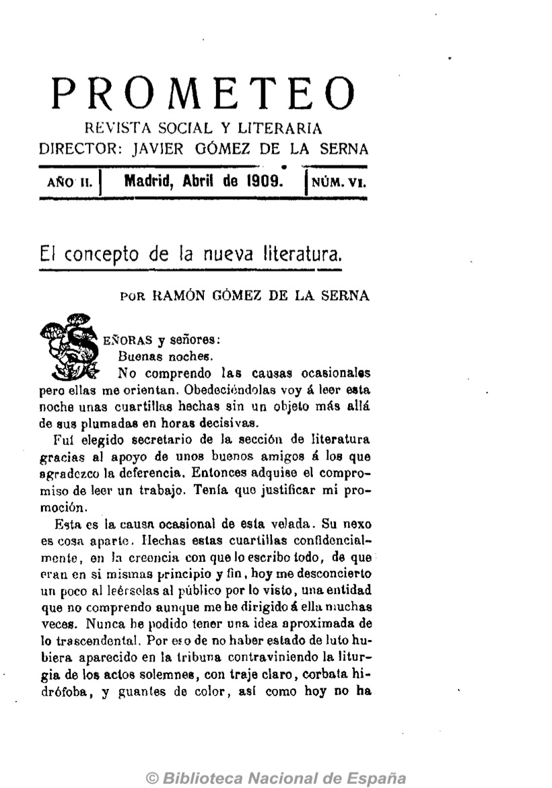
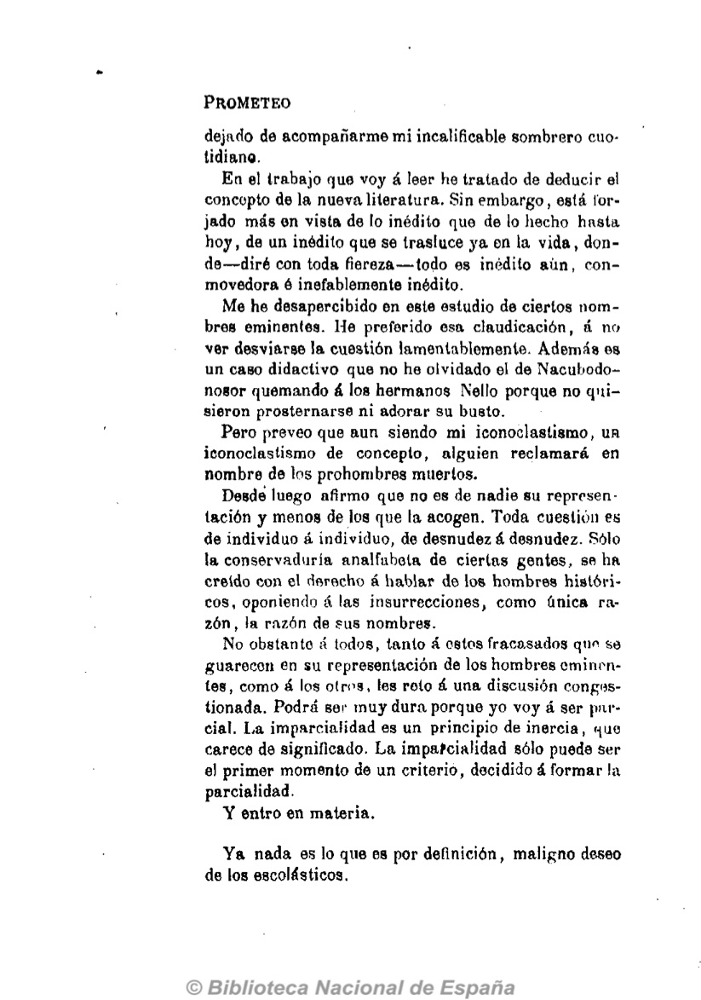
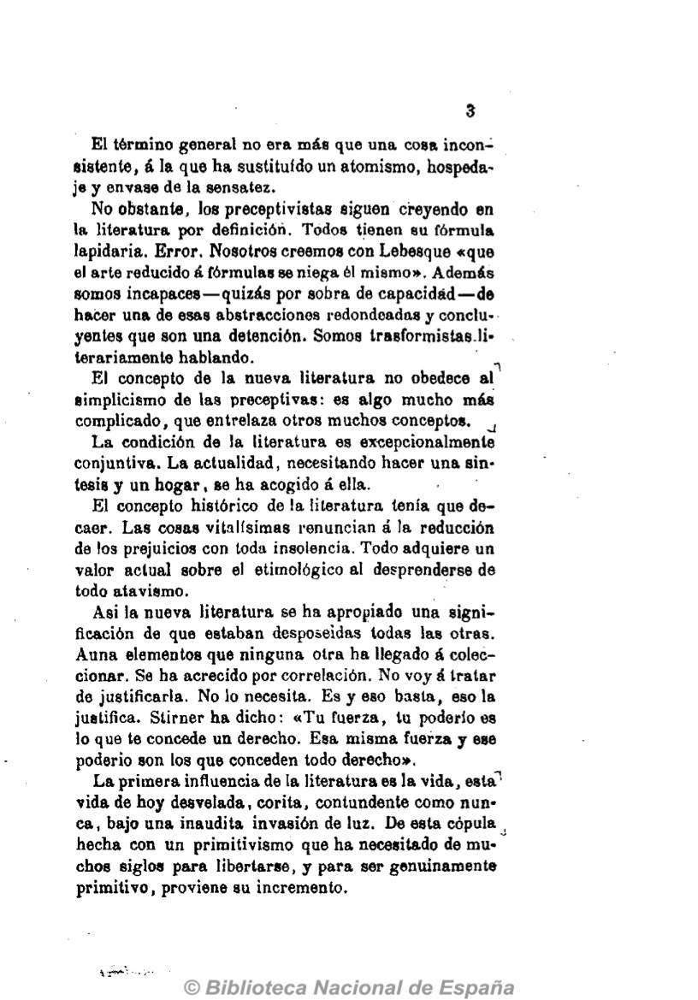
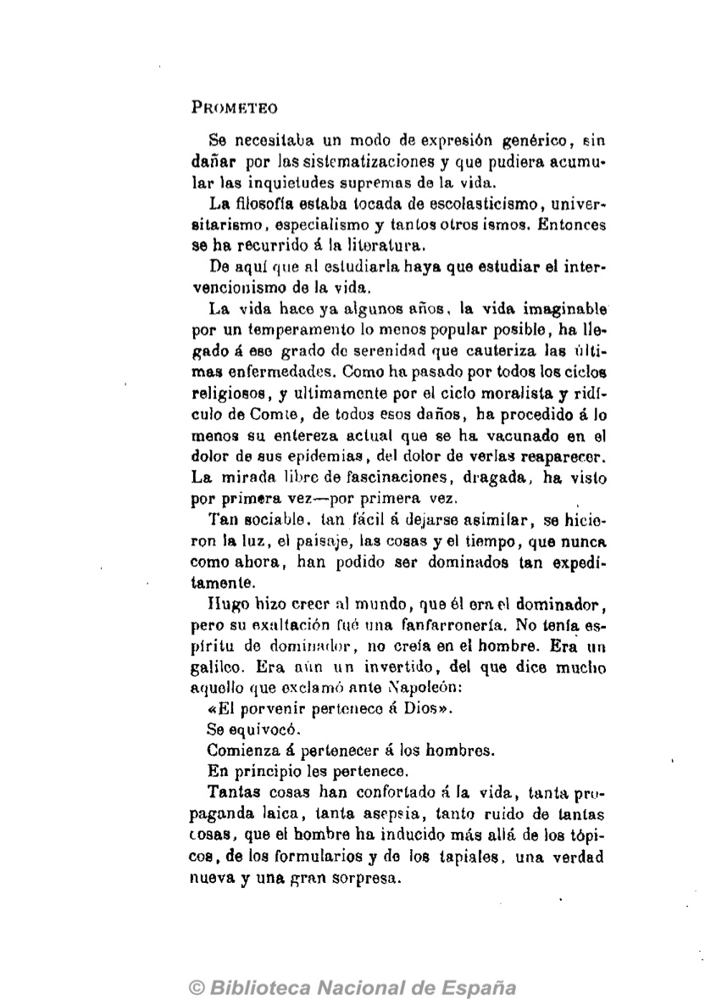
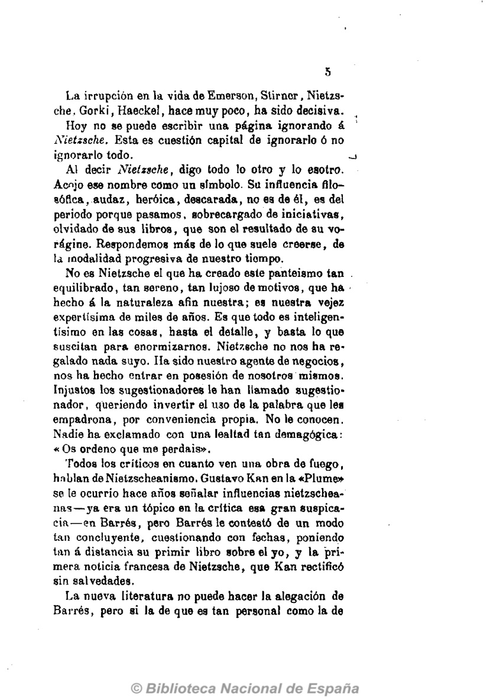
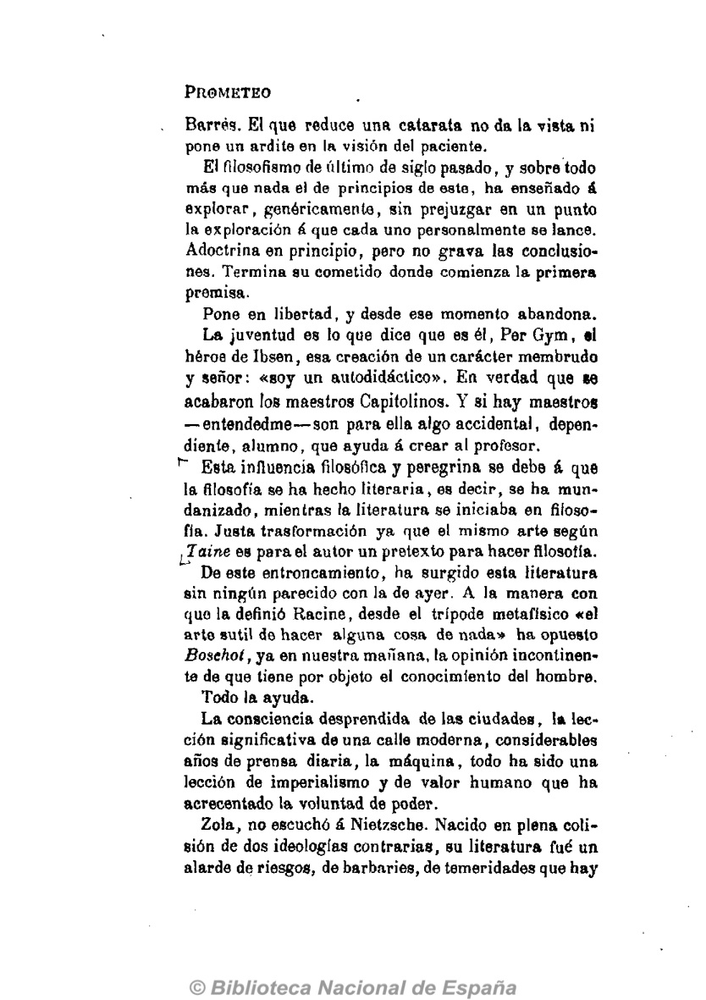

El concepto de la nueva literatura
SEÑORAS y señores:
Buenas noches.
No comprendo las causas ocasionales pero ellas me orientan. Obedeciéndolas voy a leer esta noche unas cuartillas hechas sin un objeto más allá de sus plumadas en horas decisivas.
Fui elegido secretario de la sección de literatura gracias al apoyo de unos buenos amigos a los que agradezco la deferencia. Entonces adquise el compromiso de leer un trabajo. Tenía que justificar mi promoción.
Esta es la causa ocasional de esta velada. Su nexo es cosa aparte. Hechas estas cuartillas confidencialmente, en la creencia con que lo escribo todo, de que eran en si mismas principio y fin, hoy me desconcierto un poco al leérselas al público por lo visto, una entidad que no comprendo aunque me he dirigido a ella muchas veces. Nunca he podido tener una idea aproximada de lo trascendental. Por eso de no haber estado de luto hubiera aparecido en la tribuna contraviniendo la liturgia de los actos solemnes, con traje claro, corbata hidrófoba, y guantes de color, asi como hoy no ha  
PROMETEO
dejado de acompañarme mi incalificable sombrero cuotidiano.En el trabajo que voy a leer he tratado de deducir el concepto de la nueva literatura. Sin embargo, está forjado más en vista de lo inédito que de lo hecho hasta hoy, de un inédito que se trasluce ya en la vida, donde diré con toda fiereza;todo es inédito aún, conmovedora e inefablemente inédito.
Me he desapercibido en este estudio de ciertos nombres eminentes. He preferido esa claudicación, a no ver desviarse la cuestión lamentablemente. Además es un caso didaclivo que no he olvidado el de NacubodonoBor quemando a los hermanos Nello porque no quisieron prosternarse ni adorar su busto.
Pero preveo que aun siendo mi iconoclastismo, un iconoclastismo de concepto, alguien reclamará en nombre de los prohombres muertos.
Desde luego afirmo que no es de nadie su representación y menos de los que la acogen. Toda cuestión es de individuo a individuo, de desnudez a desnudez. Sólo la conservaduría analfabeta de ciertas gentes, se ha creido con el derecho a hablar de los hombres históricos, oponiendo a las insurrecciones, como única razón, la razón de sus nombres.
No obstante todos, tanto a estos fracasados qun se guarecen en su representación de los hombres eminontes, como a los otros, les reto a una discusión congostionada. Podrá ser muy dura porque yo voy a ser parcial. La imparcialidad es un principio de inercia, '-jue carece de significado. La imparcialidad sólo puede ser el primer momento de un criterio, decidido a formar la parcialidad.
Y entro en materia.
Ya nada es lo que es por definición, maligno deseo de los escolásticos.
3
El término general no era más que una cosa inconsistente, a la que ha sustituido un atomismo, hospedaje y envase de la sensatez.
No obstante, los preceptivistas siguen creyendo en la literatura por definición. Todos tienen su fórmula lapidaria. Error. Nosotros creemos con Lebesque "que el arte reducido a fórmulas se niega él mismo". Además somos incapaces —quizás por sobra de capacidad— de hacer una de esas abstracciones redondeadas y concluyentes que son una detención. Somos transformistas literariamente hablando.
El concepto de la nueva literatura no obedece al simplicismo de las preceptivas: es algo mucho más complicado, que entrelaza otros muchos conceptos. La condición de la literatura es excepcionalmente conjuntiva. La actualidad, necesitando hacer una síntesis y un hogar, se ha acogido a ella.
El concepto histórico de la literatura tenia que decaer. Las cosas vitalísimas renuncian a la reducción de los prejuicios con toda insolencia. Todo adquiere un valor actual sobre el etimológico al desprenderse de todo atavismo.
Asi la nueva literatura se ha apropiado una significación de que estaban desposeídas todas las otras. Auna elementos que ninguna otra ha llegado a coleccionar. Se ha acrecido por correlación. No voy á tratar de justificarla. No lo necesita. Es y eso basta, eso la justifica. Stirner ha dicho: �Tu fuerza, tu poderlo es lo que te concede un derecho. Esa misma fuerza y ese poderio son los que conceden todo derecho�.
La primera influencia de la literatura es la vida, esta vida de hoy desvelada, corita, contundente como nunca, bajo una inaudita invasión de luz. De esta cúpula hecha con un primitivismo que ha necesitado de muchos siglos para libertarse, y para ser genuinamente primitivo, proviene su incremento.
PROMETEO
Se necesitaba un modo de expresión genérico, sin dañar por las sistematizaciones y que pudiera acumular las inquietudes supremas de la vida.
La filosofía estaba tocada de escolasticismo, universitarismo, especialismo y tantos otros ismos. Entonces se ha recurrido a la literatura.
De aquí que al estudiarla haya que estudiar el intervencionismo de la vida.
La vida hace ya algunos años, la vida imaginable por un temperamento lo menos popular posible, ha llegado a ese grado de serenidad que cauteriza las últimas enfermedades. Como ha pasado por todos los ciclos religiosos, y últimamente por el ciclo moralista y ridículo de Comle, de todos esos daños, ha procedido a lo menos su entereza actual que se ha vacunado en el dolor de sus epidemias, del dolor de verlas reaparecer. La mirada libre de fascinaciones, dragada, ha visto por primera vez—por primera vez.
Tan sociable, tan fácil a dejarse asimilar, se hicieron la luz, el paisaje, las cosas y el tiempo, que nunca como ahora, han podido ser dominados tan expeditamente.
Hugo hizo creer al mundo, que él era el dominador, pero su exaltación fue una fanfarronería. No tenía espíritu do dominador, no creía en el hombre. Era un galileo. Era aún un invertido, del que dice mucho aquello que exclamó ante Napoleón: �El porvenir pertenece a Dios�.
Se equivocó.
Comienza a pertenecer a los hombres.
En principio les pertenece.
Tantas cosas han confortado a la vida, tanta propaganda laica, tanta asepsia, tanto ruido de tantas tosas, que el hombre ha inducido más allá de los tópicos, de los formularios y do los tapiales, una verdad nueva y una gran sorpresa.
5
La irrupción en la vida de Emerson, Stirnor, Nietzsche. Gorki, Haeckel, hace muy poco, ha sido decisiva. Hoy no se puede escribir una página ignorando a Nietzsche. Esta es cuestión capital de ignorarlo o no ignorarlo todo.
Al decir Nietzsche, digo todo lo otro y lo esotro. Acojo ese nombre como un símbolo. Su influencia filosófica, audaz, heroica, descarada, no es de él, es del periodo porque pasamos, sobrecargado de iniciativas, olvidado de sus libros, que son el resultado de su vorágine. Respondemos más de lo que suele creerse, de la modalidad progresiva de nuestro tiempo.
No es Nietzsehe el que ha creado este panteísmo tan equilibrado, tan sereno, tan lujoso de motivos, que ha hecho a la naturaleza afín nuestra; es nuestra vejez expertísima de miles de años. Es que todo es inteligentísimo en las cosas, hasta el detalle, y basta lo que suscitan para enormizarnos. Nietzsehe no nos ha regalado nada suyo. Ha sido nuestro agente de negocios, nos ha hecho entrar en posesión de nosotros mismos. Injustos los sugestionadores le han llamado sugestionador, queriendo invertir el uso de la palabra que les empadrona, por conveniencia propia. No le conocen. Nadie ha exclamado con una lealtad tan demagógica: �Os ordeno que me perdáis�.
Todos los críticos en cuanto ven una obra de fuego, hablan de Nietzscheanismo. Gustavo Kan en la �Plume� se le ocurrió hace años señalar influencias nietzscheanas—; ya era un típico en la critica esa gran suspicacia—; en Barros, pero Barros le contestó de un modo tan concluyente, cuestionando con fechas, poniendo tan a distancia su primir libro sobre el yo, y la primera noticia francesa de Nietzsehe, que Kan rectificó sin salvedades.
La nueva literatura no puede hacer la alegación de Barres, pero si la de que es tan personal como la de
